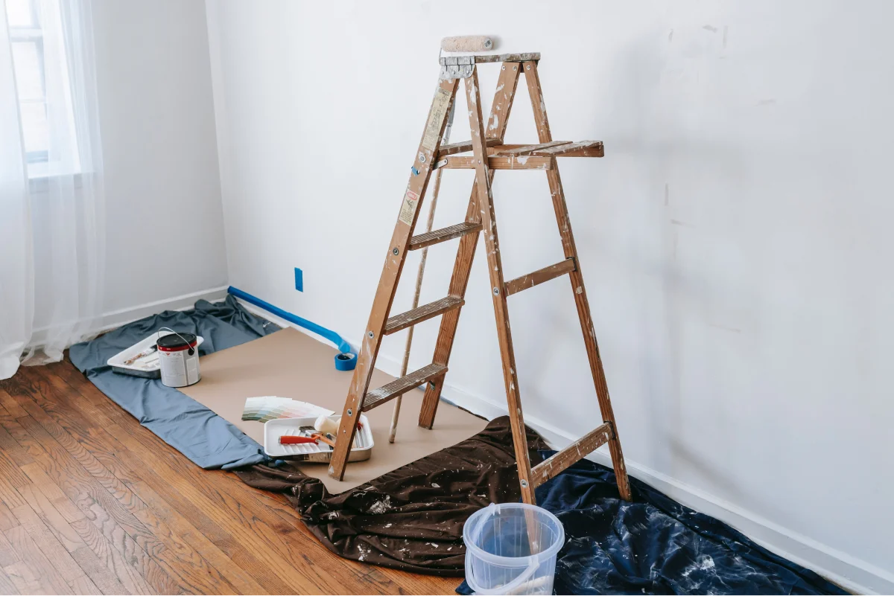

Limpieza post remodelación /Construcción
 <Descripción
Nuestros servicios profesionales de limpieza posteriores a la renovación o construcción de una casa ofrecen una limpieza completa, detallada y meticulosa de su espacio nuevo o renovado. Este servicio incluye eliminar el polvo, la suciedad y los arañazos de todas las superficies, Aspirar y desempolvar madera, zócalos, puertas, accesorios y electrodomésticos y eliminación de pegatinas y etiquetas de cualquier instalación, entre otros.
Precios
Cada limpieza es única y tiene un precio basado en los pies cuadrados de la propiedad y el tipo de limpieza que se necesite. Ofrecemos presupuestos/estimados personalizados gratuitos para cada proyecto antes de empezar. Esto garantiza que nuestros clientes nunca se sorprendan por los costos y que todas sus necesidades sean abordadas. Solicita tu estimado gratis!